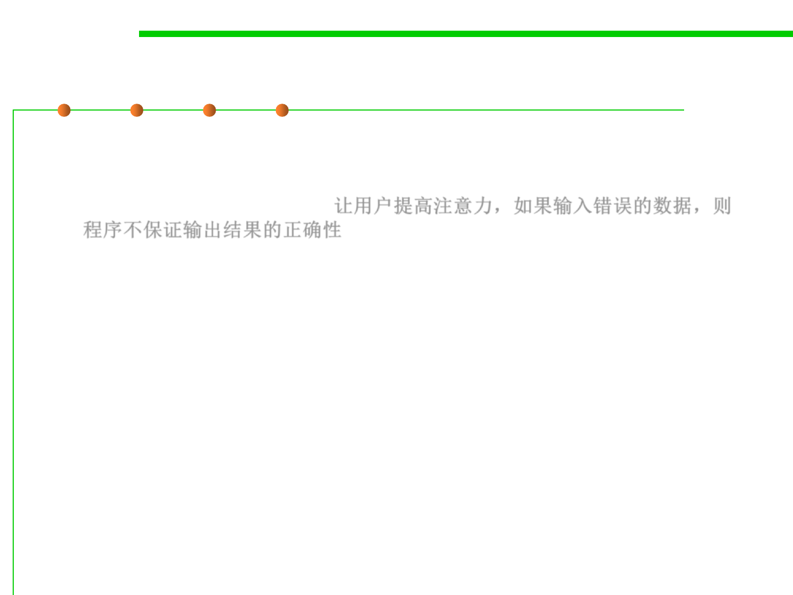

7.3 Assertions and Defensive Programming
(1) Protecting Programs From Invalid Inputs
▪ “Garbage in, Garbage out.”
– That expression is essentially software development’s version of caveat
emptor: let the user beware. 让用户提高注意力，如果输入错误的数据，则
程序不保证输出结果的正确性
▪ For production software, garbage in, garbage out isn’t good
enough.
▪ A good program never puts out garbage, regardless of what it takes
in.
– “garbage in, nothing out”
– “garbage in, error message out”
– “no garbage allowed in”
▪ “Garbage in, garbage out” is the mark of a sloppy, non-secure
program.